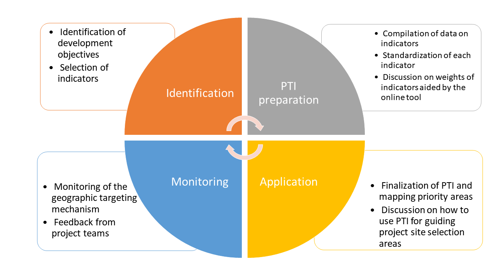
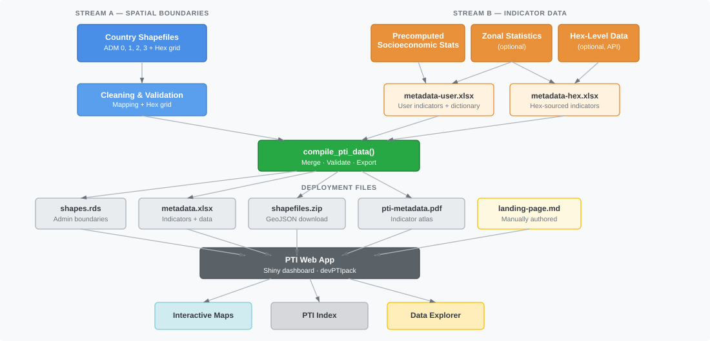
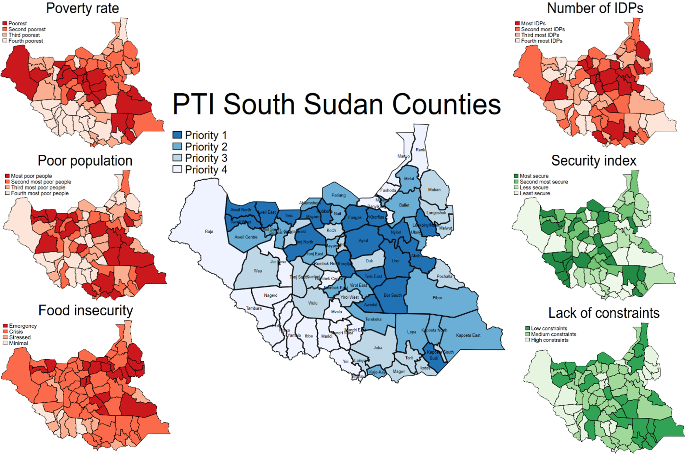

PTI Methodology
Introduction
Tracking how the World Bank’s portfolio of activities aligns with evolving circumstances in specific countries is challenging. World Bank teams engage with countries through strategic and prioritization exercises, such as the Country Partnership Framework (CPF) and the Systematic Country Diagnostic (SCD). To maximize the development benefits of activities identified under these exercises, it is essential to ensure that projects and programs evolve with changing circumstances while reaching the areas that are most in need.
The Project Targeting Index (PTI) offers a framework for project and country teams to match development objectives with geographic project site selection (Finn & Masaki, 2020; Nguyen & Hoogeveen, 2018). Teams can ensure that project site selection aligns with the country strategy, and the country management unit (CMU) can monitor consistency between project sites and the strategy. Spatially targeting the Bank’s interventions based on objective criteria and evidence helps bring transparency to project site selection and promote efficiency in reaching intended beneficiaries. Teams can use the PTI online dashboard to track fast-changing emergency situations (Masaki et al., 2022). The dashboard serves both as a database of subnational indicators and as a user-friendly tool for PTI calculation.
The purpose of this document is to provide a guideline on how PTI works, what data components feed into the PTI dashboard, and what methodological aspects underpin the composite index. The PTI process comprises four components (Figure 1). The first two describe the workflow — what teams do — while the third is a reference on how the composite index is constructed, and the fourth addresses ongoing maintenance:
- Identification — define development objectives and select indicators;
- PTI preparation — build the data pipeline and deploy the dashboard;
- Methodology — how the composite index is constructed; and
- Monitoring — keep the PTI current as conditions change.

Identification
Determine thematic areas of focus
The PTI process starts with the identification of development objectives. A clear set of development objectives that can be measured by data and evidence, established in close coordination with the respective country teams, lays the groundwork for PTI mapping. Goals outlined in a Country Partnership Framework (CPF) are a good starting point to guide selection of development objectives. In the case of Zambia1, for instance, there are three thematic areas taken directly from CPF FY19-23:
- More even territorial development with opportunities and jobs for the rural poor
- Public services and social protection for job participation
- Institutions for resilience
Identify key indicators under each thematic area
Once the key development objectives or thematic areas of focus are determined, the next step is to identify indicators pertaining to each of those objectives or areas. Since the PTI informs spatial targeting, these indicators need to be available at a subnational level (for example, villages, districts, regions, provinces). People most familiar with the country context — project teams, country experts, and sector specialists — should provide inputs on indicator selection. Teams may also consult GIS specialists, as a rich source of high-resolution socio-economic data is now available to inform spatial targeting at a highly disaggregated level.
PTI Preparation
The next step in the PTI process is to create a PTI dashboard. This dashboard primarily serves two purposes:
- A one-stop shop that offers a wide range of subnational indicators readily available and accessible; and
- A user-friendly tool to make the calculation of a PTI easy, flexible, and adaptable.
Building a PTI app requires two categories of inputs — spatial boundaries and indicator data — which are processed through a reproducible pipeline and compiled into four deployment-ready files that power the web application. Figure 2 illustrates this workflow.

Spatial boundaries
The foundation of any PTI dashboard is a set of validated administrative boundary shapefiles. These define the geographic units at which indicators will be displayed and the PTI will be calculated. A typical PTI app includes:
- Country boundary (ADM 0) — required as the outer envelope.
- Subnational administrative levels (ADM 1, 2, 3, etc.) — regions, districts, communes, or whatever administrative divisions are relevant.
- Hexagonal grid (optional) — a uniform H3 hexagonal grid covering the country, useful for indicators derived from raster data (population, night-time lights, accessibility). Hexagons avoid the modifiable areal unit problem (the fact that analytical results can change depending on how geographic boundaries are drawn) introduced by irregular administrative polygons.
All spatial layers are cleaned, validated, and combined into a single shapes.rds file with a parent-child hierarchy linking each administrative unit to its parent.
Indicator data sources
Indicator data feeding into the PTI dashboard typically comes from three sources:
Precomputed socioeconomic statistics — survey-derived indicators (DHS, MICS, household budget surveys, population census), administrative records, or other tabulated data already aggregated at subnational levels.
Zonal statistics (optional) — indicators extracted from raster surfaces (e.g., population density from WorldPop, night-time lights, vegetation indices) by computing summary statistics within each administrative polygon.
Hex-level data (optional) — pre-computed indicator values at H3 hexagonal resolution, accessed through an API or prepared as local parquet files.
These indicator sources are combined with descriptive metadata into two intermediate Excel workbooks:
-
metadata-user.xlsx— the user-prepared indicator dictionary with variable descriptions, pillar assignments (i.e., which thematic area or development objective each indicator belongs to), and per-admin-level data sheets. -
metadata-hex.xlsx— hex-sourced indicators with auto-populated metadata, produced when the hex data pipeline is used.
Compilation
The compile_pti_data() function merges all intermediate inputs, re-validates the combined data, and produces four deployment-ready files:
| File | Contents |
|---|---|
shapes.rds |
Validated spatial boundaries for all admin levels |
metadata.xlsx |
Merged indicator dictionary and data |
shapefiles.zip |
GeoJSON exports of each admin layer for download |
pti-metadata.pdf |
Printable indicator atlas (one map per indicator) |
A fifth file, landing-page.md, is manually authored and provides the content for the dashboard’s landing page.
These five files, together with a short launch script, are all that is needed to deploy the PTI web application locally or to a hosting service such as Posit Connect.
Data quality assurance
It is crucial to ensure the quality of the data through manual inspection and standardized metadata reports. Key factors that must be accounted for during quality assurance include:
- Missing observations — regions with missing values receive no targeting priority in the PTI calculation.
- Presence of variance — if all regions have the same value for an indicator, z-score normalization will be impossible and the indicator will contribute nothing to the index.
- Extreme observations — outliers and the magnitude of variables should be carefully inspected, as they can disproportionately influence the standardized scores.
- Spatial boundary quality — boundaries should be simple and lightweight enough to render in a web browser, free of holes and missing polygons, and carry unique names and regional identifiers.
Getting started
For step-by-step instructions on setting up a new PTI project, preparing data, and deploying the dashboard, see the Build a PTI tutorial series.
Methodology
The previous sections described the PTI workflow — identifying objectives, preparing data, and building a dashboard. This section turns to the methodology: how the composite index is actually constructed.
The initial PTI methodology was proposed as part of “Approaches to Targeting in South Sudan” (World Bank, 2019) and has been implemented in the devPTIpack R package. The PTI is a composite index of several development indicators chosen to inform geographical targeting. The key topics are normalization, index calculation, the role of weights, and how data is projected across spatial levels.
Normalization (z-score standardization)
Different indicators are measured in different units and have vastly different scales. For example, the number of poor people in a district might range from thousands to millions, while the share of the population with access to electricity ranges from 0 to 1. If these raw values were combined directly, the indicator with the larger absolute values would dominate the composite index.
To place all indicators on a common, comparable scale, the PTI standardizes them using z-score normalization, transforming each indicator to have a mean of 0 and a standard deviation of 1:
where:
- is the value of indicator in region ,
- is the mean of indicator across all regions, and
- is the standard deviation of indicator .
After standardization, each indicator’s z-score tells you how many standard deviations a region’s value lies above or below the national mean. A z-score of +1.5 means the region is 1.5 standard deviations above average; a z-score of −0.8 means it is 0.8 standard deviations below average.
Normalization is performed per spatial level
A critical aspect of the PTI normalization is that z-scores are computed independently at each spatial level of aggregation. If the poverty rate is available at ADM 1 (5 regions) and at ADM 2 (30 districts), the mean and standard deviation used for normalization are computed separately among the 5 regions and among the 30 districts, respectively.
This is necessary because the statistical distribution of an indicator changes with the level of aggregation: district-level values typically show more variation than regional averages. Normalizing at each level ensures that the z-scores reflect a region’s position relative to its true peer group, rather than being distorted by mixing fundamentally different distributions.
As a consequence, the same raw value can yield different z-scores depending on the spatial level at which it is normalized.
Worked example: poverty rate at ADM 1 vs. ADM 2
Consider a country with 3 regions (ADM 1), each containing several districts (ADM 2). The poverty rate (%) is available at both levels:
ADM 1 normalization (3 regions):
| Region | Poverty rate (%) | z-score |
|---|---|---|
| North | 45 | +1.12 |
| Central | 30 | −0.32 |
| South | 25 | −0.80 |
Mean = 33.3%, SD = 10.4%. The North region, with the highest poverty, gets a positive z-score.
ADM 2 normalization (all 8 districts across the three regions):
| District | Region | Poverty rate (%) | z-score |
|---|---|---|---|
| North-A | North | 52 | +1.06 |
| North-B | North | 43 | +0.39 |
| North-C | North | 38 | +0.01 |
| Central-West | Central | 35 | −0.22 |
| Central-East | Central | 28 | −0.74 |
| South-West | South | 25 | −0.97 |
| South-Central | South | 22 | −1.19 |
| South-East | South | 60 | +1.66 |
Mean = 37.9%, SD = 13.3%. Notice that the South-East district has a very high poverty rate that was hidden within the South region’s ADM 1 average. The z-score distribution at ADM 2 reveals subnational variation that the coarser ADM 1 normalization cannot capture.
PTI index construction
Once all indicators are normalized, the PTI composite index for a given targeting priority is computed as a weighted sum of the standardized indicators:
where:
- is the z-score of indicator in region , and
- is the weight assigned to indicator .
These calculations produce a single index number for each region. The regions are then ranked and divided into priority classes — typically 3 to 5 groups of equal size (quantiles). The region with the highest PTI value is assigned to Priority 1 (highest need), while the region with the lowest PTI value falls into the lowest priority class.
The role of positive and negative weights
Users have flexibility to make weights positive or negative to control the direction of each indicator’s contribution to the PTI.
- A positive weight means that higher values of the indicator push a region toward higher priority (Priority 1).
- A negative weight means that higher values of the indicator push a region toward lower priority.
This distinction is essential when combining indicators that point in opposite directions relative to the targeting objective. Consider a scenario where the goal is to target areas with the highest poverty and the lowest access to infrastructure:
| Variable | Weight | Effect on PTI |
|---|---|---|
| Poverty rate | +1 | Higher poverty → higher priority |
| Electricity grid access | −1 | Higher access → lower priority |
If both variables were assigned a positive weight, the PTI would identify as top priority those regions with both the highest poverty and the highest electricity access — clearly counterintuitive. Setting the electricity access weight to −1 reverses its effect: the PTI now scores highest in regions where poverty is high and electricity access is low, which aligns with the targeting objective.
It is also possible to assign weights greater than 1 (or less than −1) to emphasize a variable’s relative importance compared to others. For example, setting the poverty rate weight to +2 and the electricity access weight to −1 makes the poverty dimension twice as influential in determining priority areas.
Worked example: PTI with two indicators
Using the ADM 2 poverty z-scores from the example above, suppose we add a second indicator — electricity grid access — which has been independently normalized at ADM 2 to produce its own set of z-scores. We compute the PTI with weights +1 (poverty) and −1 (electricity):
| District | Poverty z | Electricity z | PTI = (+1 × Pov) + (−1 × Elec) |
|---|---|---|---|
| North-A | +1.06 | −0.90 | +1.96 |
| North-B | +0.39 | −0.40 | +0.79 |
| North-C | +0.01 | +0.20 | −0.19 |
| Central-West | −0.22 | +0.60 | −0.82 |
| Central-East | −0.74 | +1.10 | −1.84 |
| South-West | −0.97 | +0.80 | −1.77 |
| South-Central | −1.19 | +1.40 | −2.59 |
| South-East | +1.66 | −1.50 | +3.16 |
The South-East district scores highest: it has both the most severe poverty and the lowest electricity access. The South-Central district scores lowest: relatively low poverty combined with high electricity access.

Data projection across spatial levels
The index formula in the previous section assumes every indicator is available at the target spatial level. In practice, not all indicators are available at every level: some may exist only at ADM 1 (regions) while others are available at ADM 2 (districts) or at the hexagonal grid level. The PTI handles this mismatch through data projection — a set of rules that govern how indicator values move between spatial levels.
Top-down projection (coarse → fine)
When an indicator is available at a coarser level (e.g., ADM 1) but the PTI is being calculated at a finer level (e.g., ADM 2), the indicator’s normalized z-score is projected downward by repeating the parent region’s value at each child unit.
Critically, normalization happens before projection:
- The indicator is first normalized among the units at its native level (e.g., among the 5 ADM 1 regions).
- The resulting z-scores are then copied verbatim to every child unit at the finer level (e.g., each district inherits its parent region’s z-score).
The indicator is not re-normalized at the finer level after projection. Re-normalizing would erase the regional-level information the indicator was intended to capture — the z-score reflects how a region compares to all regions, and that comparative meaning must be preserved when the score is used at the district level.
Worked example: projection from ADM 1 to ADM 2
Suppose “school enrollment rate” is available only at ADM 1:
Step 1 — Normalize at ADM 1:
| Region | Enrollment (%) | z-score |
|---|---|---|
| North | 72 | −1.07 |
| Central | 85 | +0.91 |
| South | 80 | +0.15 |
Mean = 79.0%, SD = 6.6%.
Step 2 — Project to ADM 2 (copy parent z-score):
| District | Parent region | Enrollment z-score |
|---|---|---|
| North-A | North | −1.07 |
| North-B | North | −1.07 |
| North-C | North | −1.07 |
| Central-West | Central | +0.91 |
| Central-East | Central | +0.91 |
| South-West | South | +0.15 |
| South-Central | South | +0.15 |
| South-East | South | +0.15 |
All districts within the same region receive identical z-scores for this indicator. When combined with district-level indicators (like the poverty rate), the PTI still differentiates among districts — the projected regional indicator simply adds a uniform regional-level signal.
Bottom-up aggregation: data is NOT aggregated upward
The PTI pipeline does not aggregate fine-level data upward to coarser levels. If an indicator exists at ADM 2, it is not averaged or summed to produce ADM 1 values. Each level uses only the data that was originally prepared at that level.
The one exception is hexagonal grid data, where bottom-up aggregation is performed from hex cells to administrative polygons. In this case, the aggregation method is case-dependent: the appropriate function (mean, sum, population-weighted mean, etc.) and weighting scheme (population, area, or none) are specified per indicator in the metadata workbook, based on the indicator’s statistical nature. For example:
| Indicator | Aggregation function | Weighting |
|---|---|---|
| Night-time lights | Mean | None |
| Population count | Sum | None |
| Poverty rate | Mean | Population-weighted |
| Flood exposure | Sum | None |
Hex-to-admin aggregation is always performed directly from hex to each admin level (hex → ADM 1, hex → ADM 2, etc.), never chained through intermediate levels (never hex → ADM 2 → ADM 1). Chaining would compound rounding and boundary-assignment errors at each intermediate step, producing less accurate results than a single direct aggregation.
Weight identification
Identifying appropriate weights for the PTI is fundamentally a consensus-driven process. It requires careful deliberation among project stakeholders, including the technical team and government counterparts. The challenge lies in balancing technical rigor with practical considerations, as the choice of weights can significantly influence which areas are prioritized. This process is inherently iterative and may involve context-specific judgments, reflecting the complexity of development targeting.
The steps involved in finalizing weights are as follows:
Experiment — The team uses the online PTI platform to experiment with various combinations of indicators and weights. This allows for dynamic exploration of how different choices affect the output.
Sensitivity analysis — The sensitivity of the ranking of priority areas to these permutations is examined, often using rank correlation analyses. This step reveals how robust or volatile the prioritization is in response to changes in weights and indicator selection.
Consensus — The team consolidates the weights and indicators based on insights from the sensitivity analysis, as well as through discussions within the project team and with government representatives. This collaborative approach ensures that chosen weights reflect both analytical findings and stakeholder perspectives.
In practice, the PTI dashboard supports this process directly: users can toggle indicators on and off, adjust weights with sliders, and immediately see how the priority map responds. A ranking is considered robust when the top-priority areas remain largely stable across reasonable weight variations — for example, when the same districts appear in Priority 1 regardless of whether the poverty weight is set to +1 or +2.
Choosing appropriate weights always involves some degree of subjectivity. The process must be transparent and carefully evaluated, because even small changes in weights can substantially alter the ranking of priority areas — especially when the selected variables are only loosely correlated or when few variables are used in constructing the PTI.
For instance, in the South Sudan example, the poverty rate and the number of poor are only weakly correlated (World Bank, 2019). This means that adjusting their weights can lead to substantial shifts in which counties are identified as highest priority. With only a few variables in play, the impact of weighting decisions is even more pronounced, underscoring the importance of careful and collaborative evaluation.
Monitoring
The PTI should not be a static tool. As circumstances on the ground change or project objectives evolve, the dashboard’s indicators and weights should be revisited and updated.
Beyond recalibration, project teams working in priority areas will inevitably encounter unforeseen implementation challenges — logistical bottlenecks, political dynamics, infrastructure gaps — that no survey or administrative dataset can fully anticipate. Recording these experiences is essential: future project teams benefit greatly from lessons learned at specific sites.
For these reasons, identifying priority areas should not be based solely on the PTI. Teams should complement the index with qualitative field knowledge, and systematically document site-level challenges so that future targeting decisions are informed by both quantitative evidence and operational experience.
References
Finn, A., & Masaki, T. (2020). Subnational Targeting of Project Sites Using Project Targeting Index (PTI). Poverty and Equity Notes: Tools & Methods, No. 33. World Bank, Washington, DC. https://openknowledge.worldbank.org/handle/10986/34311
-
Masaki, T., Bosch, L., Finn, A., Meyer, M., Haider, S. Z., & Bukin, E. (2022). Dashboards for development: the power of geospatial data at your fingertips. Poverty and Equity Notes, Issue 47. World Bank, Washington,
Nguyen, N. T. V., & Hoogeveen, J. (2018). Assessing the poverty footprint of World Bank projects at sub-national levels. Poverty and Equity Notes: Tools & Methods, No. 16. World Bank, Washington, DC.
World Bank. (2019). Approaches to targeting in South Sudan: Strengthening targeting — South Sudan — Guidance framework. Washington, DC: World Bank Group. http://documents.worldbank.org/curated/en/325101561441344607
World Bank. (2022a). Pakistan Portfolio Footprint Analysis. Washington, DC: World Bank Group.
World Bank. (2022b). 2022 Summer University: Introduction to R and R-shiny as Tools for Building Interactive Geospatial Dashboards.